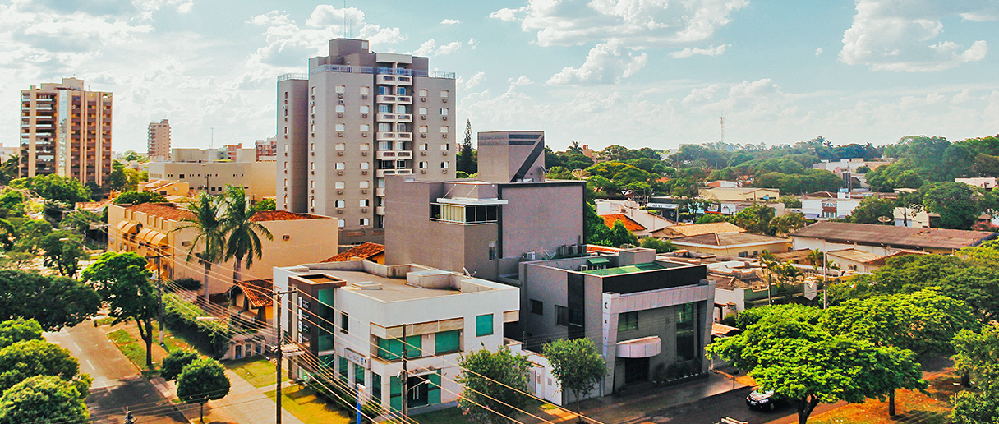

O Mato Grosso do Sul é um estado da região Centro-Oeste do Brasil, conhecido por suas belezas naturais, especialmente o Pantanal, um dos maiores biomas do mundo. Sua capital é Campo Grande. O estado possui economia forte na agropecuária e no turismo, com destaque para Bonito, famoso pelas águas cristalinas e ecoturismo. A cultura local mistura influências indígenas, paraguaias e sertanejas.
